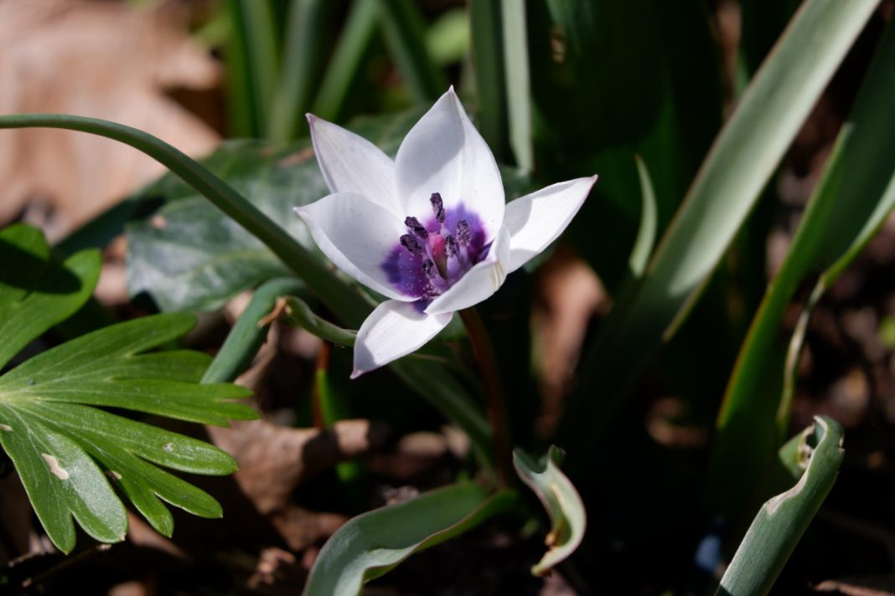
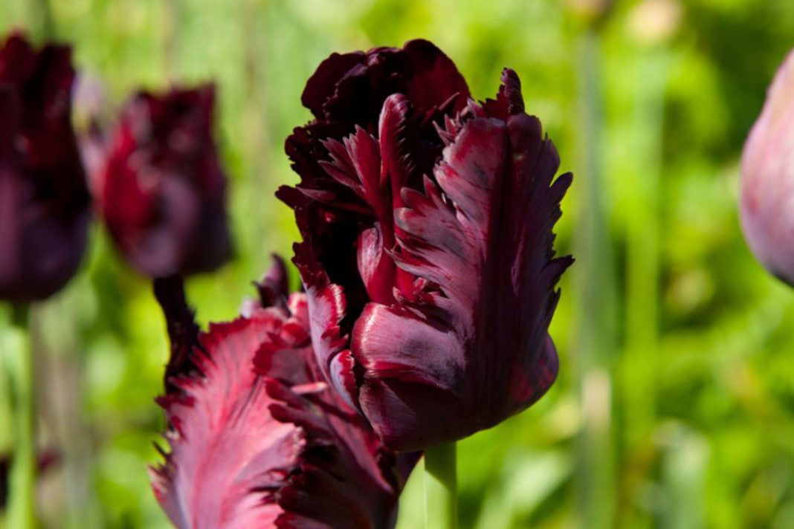
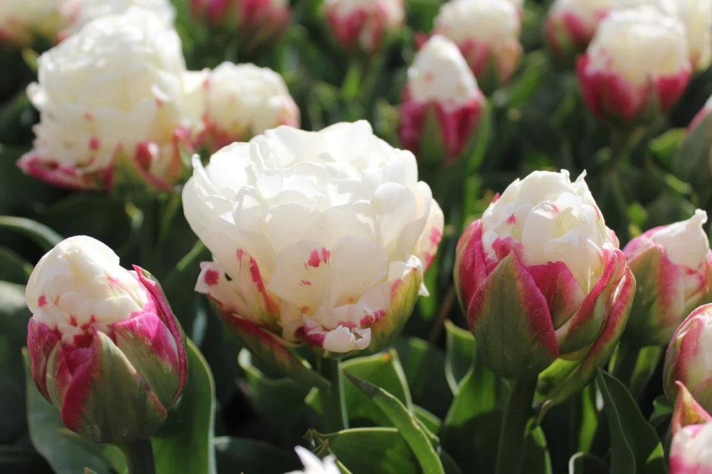
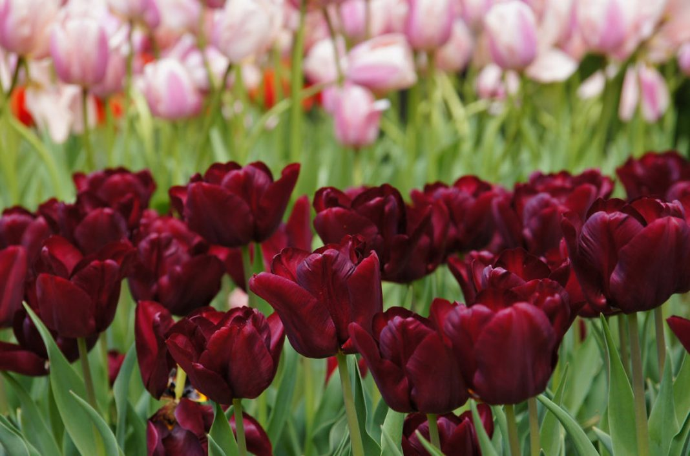
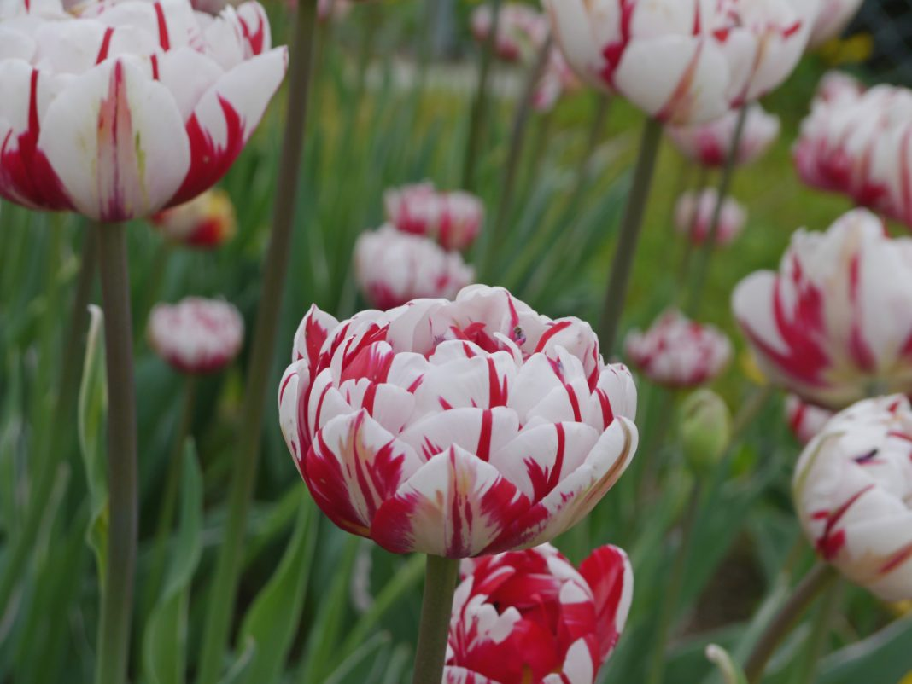
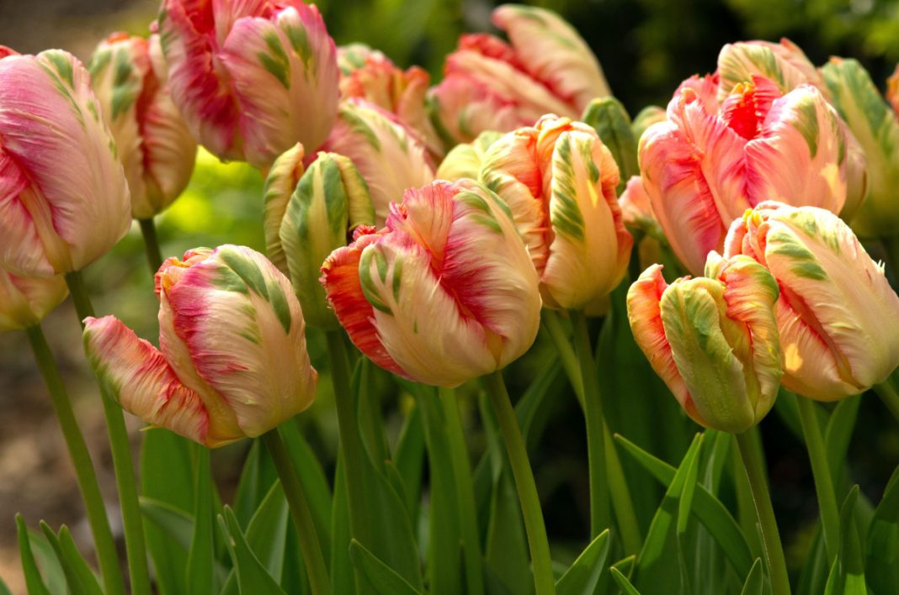
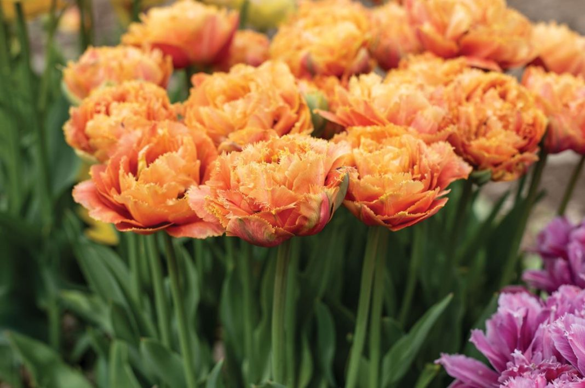
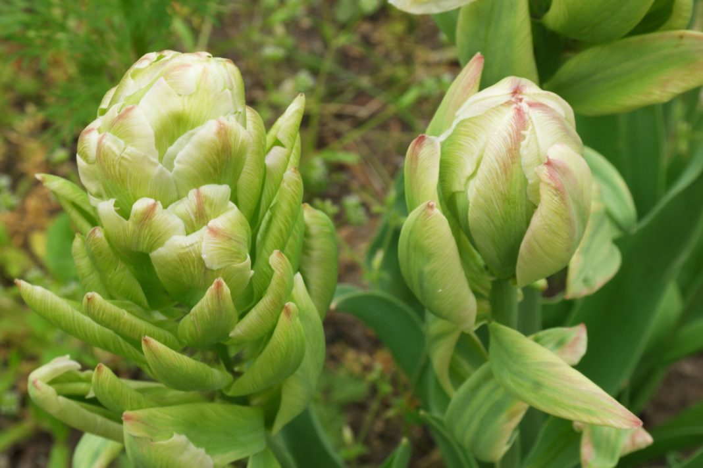

Всем известно, что тюльпан (или Túlipa) – невероятно красивый цветок, прочно ассоциируемый в нашем сознании с весной и теплом. Наши флористы отмечают: в мире существуют тюльпаны самых разнообразных оттенков, что делает их популярным выбором на 8 марта и другие весенние праздники. Форма их бокаловидных бутонов легко узнаваема, но могут встречаться и более необычные варианты. Какие бы тюльпаны вы ни выбрали, несомненно одно – эти цветы определенно понравятся каждому! Тем не менее перед покупкой букета хорошей идеей будет разобраться, что представляют из себя эти нежные цветы. Сегодня мы подробно исследуем тюльпаны и определим их символическое значение в профессиональной флористике.
Виды самых удивительных тюльпанов:

Карликовый тюльпан, со стеблем, достигающим в высоту не более 15 см. Зацветает миниатюрная «Альба Коурелеа Окулята» (‘Alba Coerulea Oculata’) в мае, реже в конце апреля. Распустившиеся бутоны, диаметром до 5 см, напоминают звезду с остроконечными лучами. При этом особенно эффектно на фоне белых лепестков смотрится большое контрастное пятно кобальтового цвета, находящееся в центре. Сорт отличается хорошей зимостойкостью, может расти на солнце или при лёгком затенении.
Низкорослая группа дикорастущего вида.Характеризуется и длительным цветением, высокой декоративностью и устойчивостью к вирусу пестролепестности. Цветки изящной, звездчаткой формы.В групповых посадках выглядят очень эффектно. Также рекомендуются для выращивания на альпийских горках, в садовых вазонах.

Попугайный тюльпан необычной тёмно-бордовой, почти чёрной окраски. Растение стройное, высотой до 55 см. «Блэк Пэррот» (‘Black Parrot’) устойчив к болезням, если менять место посадки раз в 4-5 лет. Назначение универсальное.
Цветет в конце мая, образуя экзотический сильно гофрированный тюльпан, темно-бордовый с тонкими полосками зеленого. Цветки высотой до 10 см, в диаметре 15-20 см. Продолжительность цветения - до 2-3 недель. Изумительный цветок тюльпана Black Parrot возвышается на крепкой ноге, высотой 45 см. Попугайные тюльпаны - тюльпаны этого класса имеют самый необычный и экзотический вид: лепестки их имеют глубоко изрезанные края, иногда волнистые, чем напоминают растрепанные птичьи перья. Широко раскрытый цветок может достигать в диаметре 20 см. Окраска у Попуганных тюльпанов встречается самая разнообразная: от белой до пурпурно-черной.

«Айс Крим» (‘Ice Cream’) и впрямь напоминает самое настоящее мороженое. В высоту растение достигает 30-40 см. Бутоны появляются поздно, в середине мая. Цветы махровые, крупные, диаметром 8-10 см. Лепестки плотно прилегают друг к другу, образуя конус. В центре окраска бутона белая, а снаружи малиновая или насыщенная розовая с зелёным.
Махровые тюльпаны пользуются любовью у цветоводов благодаря своим ярким краскам и обильному цветению. Форма цветков тюльпанов этого класса заслуживает отдельного внимания. Большому количеству лепестков словно тесно, они образуют пышные головки, совершенно непохожие на классические цветки тюльпана. Цветы махровые, преимущественно теплых тонов, в полностью раскрытом состоянии могут достигать в диаметре 10 см, долго не увядают.

«Бургунди» (‘Burgundy’) — изысканный тюльпан, вырастающий до 50-60 см. У него крупные, изящные бутоны с остроконечными, выгнутыми наружу лепестками. По форме цветы напоминают узкий бокал, высотой 8-10 см. Лепестки окрашены в необычный тёмно-фиолетовый или пурпурно-фиолетовый цвет.
Лилиецветные тюльпаны - тюльпаны этого класса легко узнаваемы, так как своей формой напоминают цветок лилии — изящные бокалы с отгибающимися наружу и заостренными на концах лепестками. Лилиецветные тюльпаны довольно высокорослы (до 50-60 см в высоту), имеют крепкие цветоносы и цветы разнообразной окраски. Цветут во второй половине мая и, несмотря на свою немногочисленность, широко используются для озеленения садов и парков, для срезки, а некоторые сорта пригодны для выгонки.

Сорт выведен в 1953 году. Своё название «Карнавал де Найс» (‘Carnaval de Nice’) получил в честь карнавала в Ницце, на котором происходит «битва цветов». Растение цветёт поздно, в конце мая. Этот цветок пионовидной формы как нельзя лучше соответствует настроению праздника.
Махровые тюльпаны пользуются любовью у цветоводов благодаря своим ярким краскам и обильному цветению. Форма цветков тюльпанов этого класса заслуживает отдельного внимания. Большому количеству лепестков словно тесно, они образуют пышные головки, совершенно непохожие на классические цветки тюльпана. Цветы махровые, преимущественно теплых тонов, в полностью раскрытом состоянии могут достигать в диаметре 10 см, долго не увядают. У махровых тюльпанов невысокие прочные стебли, раннее цветение, сочная, яркая окраска

«Априкот Пэррот» (‘Apricot Parrot’) – само очарование. Высота растения около 55 см. Сорт относится к группе попугайные тюльпаны. Цветы крупные, диаметром до 20 см, широко раскрытые, немахровые. С волнистыми, сильно изрезанными краями лепестков, напоминающими растрёпанные перья экзотических птиц. Окраска абрикосовая, с более тёмной, розовой каймой и изящными зелёными мазками. Цветёт «Априкот Пэррот» в мае или июне. Любоваться его изысканными бутонами можно 7-10 дней.
Попугайные тюльпаны - тюльпаны этого класса имеют самый необычный и экзотический вид: лепестки их имеют глубоко изрезанные края, иногда волнистые, чем напоминают растрепанные птичьи перья. Широко раскрытый цветок может достигать в диаметре 20 см. Окраска у Попуганных тюльпанов встречается самая разнообразная: от белой до пурпурно-черной. Высота растений может быть, в зависимости от сорта, от 40 до 65 см. Цветут поздно, во второй половине мая. Часто цветоносы не выдерживают довольно крупных цветов, и они поникают.

«Аркада» (‘Arcada’) — необычайно красивый тюльпан, высотой около 50 см. Цветёт в конце апреля – мае. Цветки пышные, махровые, с тоненькой, словно иголочки, бахромой. Основная окраска жёлтая с бордово-розовыми, розовыми или лососевыми мазками. Ярких красок можно добиться, высаживая растение на солнце.
Бахромчатых тюльпанов невозможно: каждый из них неповторим. Местоположение: участок должен быть расположен в солнечном месте и защищен от ветра. Важно, чтобы он не имел неровностей, в которых весной и осень будет застаиваться вода - это может привести к вымоканию и загниванию луковиц. Почва: тюльпаны - растения довольно неприхотливые и могут мириться с любой садовой почвой, но наилучшей для них является рыхлая, хорошо дренированная, умеренно увлажненная, т.е. суглинистая и супесчаная почва с нейтральной или слабощелочной реакцией. Тяжелую суглинистую почву можно улучшить добавлением песка и торфа.

«Бруклин» (‘Brooklyn’) – один из самых причудливых и удивительных сортов, относящихся к пионовидным, махровым тюльпанам. Его густомахровые лепестки располагаются на разных ярусах. Их так много, что создаётся ощущение, что мы видим не один цветок, а целое соцветие. Окраска тоже необычная: лепестки белые, но они украшены зелёными полосами и едва заметными розоватыми штрихами. Цветёт сорт поздно. «Бруклин» вырастает до 35 см, любит солнце. Бутоны у тюльпана высокие, закругленные, тяжёлые, их лучше подвязывать.
Пионовидные тюльпаны. Тюльпаны этого класса обладают густомахровыми цветами с широкими лепестками, внешне напоминающими цветы пионов. Пионовидные тюльпаны имеют достаточно внушительные размеры: высота их стеблей нередко превышает отметку в сорок, а иногда и в шестьдесят сантиметров. Используются для оформления участков и срезки, однако отдельные сорта подходят и для выгонки. Пионовидные тюльпаны имеют немалое количество сортов, которые просто поражают своей красотой и роскошью.
| Название | Количество популяций | Место выращивания |
| Квинсленд Бахромчатый тюльпан | 10 000 000 | Австрия |
| Квинсленд Бахромчатый тюльпан | 33 611 | Португалия |
| Мэрри Кристмас | 21 000 | Польша |
| Пэррот Кинг | 10 000 | Германия |
Любимые цвета тюльпанов у девушек